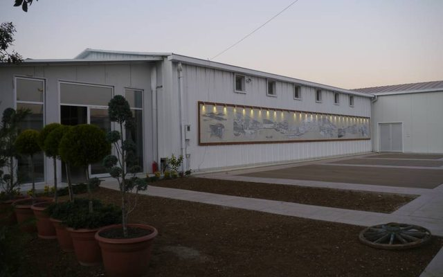
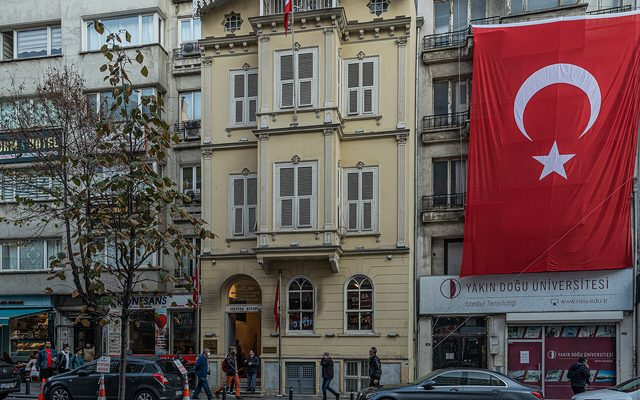
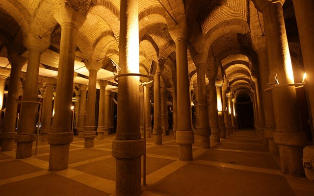

Ana sayfa › İl il gezilecek yerler › İstanbul
İstanbul'da Kültür Varlıkları rehberinde 89 yer var: 52 müze, 21 kale & tarihi yapı, 14 dini yapı, 2 ören yeri. Aşağıda öne çıkanları, haritayı ve tüm yerlerin listesini bulabilirsiniz.
⭐ Öne çıkanlar

1 · İstanbul · Müzeİstanbul Arkeoloji Müzeleri
İstanbul Arkeoloji Müzeleri, Topkapı Sarayı'nın dış bahçesinde, Gülhane'de yer alan ve Osmanlı İmparatorluğu'nun ilk modern müzesi olarak kurulan bir müze kompleksidir.

2 · İstanbul · MüzeBüyük Saray Mozaikleri Müzesi
Büyük Saray Mozaikleri Müzesi, Sultanahmet'teki Arasta Çarşısı'nın hemen altında, Bizans imparatorlarının yüzyıllarca yaşadığı Büyük Saray'dan geriye kalan en…

3 · İstanbul · MüzeAdalar Müzesi
Adalar Müzesi, Büyükada'da eski bir hangarda 2010'da açılmış bir kent müzesidir.
🗺 Haritada
📍 Tüm yerler (89)
Müze (52)
İstanbul Arkeoloji MüzeleriMüzeBüyük Saray Mozaikleri MüzesiMüzeAdalar MüzesiMüze Adam Mickiewicz MüzesiMüze
Adam Mickiewicz MüzesiMüze Ara Güler MüzesiMüze
Ara Güler MüzesiMüze ArterMüze
ArterMüze Askeri MüzeMüze
Askeri MüzeMüze
Atatürk Müzesi (Şişli)Müze Atlas 1948 İstanbul Sinema MüzesiMüze
Atlas 1948 İstanbul Sinema MüzesiMüze Ayasofya Tarih ve Deneyim MüzesiMüze
Ayasofya Tarih ve Deneyim MüzesiMüze Beyazıt Hamam Kültürü MüzesiMüze
Beyazıt Hamam Kültürü MüzesiMüze Beykoz Cam ve Billur MüzesiMüze
Beykoz Cam ve Billur MüzesiMüze Cendere Sanat MüzesiMüze
Cendere Sanat MüzesiMüze Elgiz Çağdaş Sanat MüzesiMüze
Elgiz Çağdaş Sanat MüzesiMüze Fenerbahçe MüzesiMüze
Fenerbahçe MüzesiMüze Fethiye MüzesiMüze
Fethiye MüzesiMüze Florya Atatürk Deniz KöşküMüze
Florya Atatürk Deniz KöşküMüze Galata Mevlevihanesi MüzesiMüze
Galata Mevlevihanesi MüzesiMüze Hafıza 15 Temmuz MüzesiMüze
Hafıza 15 Temmuz MüzesiMüze Kemal Sunal MüzesiMüze
Kemal Sunal MüzesiMüze Kâzım Karabekir Paşa MüzesiMüze
Kâzım Karabekir Paşa MüzesiMüze Masumiyet MüzesiMüze
Masumiyet MüzesiMüze Mehmet Akif Ersoy Hatıra EviMüze
Mehmet Akif Ersoy Hatıra EviMüze MiniatürkMüze
MiniatürkMüze Müze GazhaneMüze
Müze GazhaneMüze Orhan Kemal MüzesiMüze
Orhan Kemal MüzesiMüze Panorama 1453 Tarih MüzesiMüze
Panorama 1453 Tarih MüzesiMüze Pera MüzesiMüze
Pera MüzesiMüze Pierre Loti MüzesiMüze
Pierre Loti MüzesiMüze Rahmi M. Koç MüzesiMüze
Rahmi M. Koç MüzesiMüze Rezan Has MüzesiMüze
Rezan Has MüzesiMüze Sadberk Hanım MüzesiMüze
Sadberk Hanım MüzesiMüze Sait Faik Abasıyanık MüzesiMüze
Sait Faik Abasıyanık MüzesiMüze Sakıp Sabancı MüzesiMüze
Sakıp Sabancı MüzesiMüze Salt GalataMüze
Salt GalataMüze Türk Vakıf Hat Sanatları MüzesiMüze
Türk Vakıf Hat Sanatları MüzesiMüze Türk ve İslam Eserleri MüzesiMüze
Türk ve İslam Eserleri MüzesiMüze Türkiye İş Bankası MüzesiMüze
Türkiye İş Bankası MüzesiMüze Yahya Kemal MüzesiMüze
Yahya Kemal MüzesiMüze Yıldız Porselen FabrikasıMüze
Yıldız Porselen FabrikasıMüze santralistanbul Enerji MüzesiMüze
santralistanbul Enerji MüzesiMüze Çatalca Mübadele MüzesiMüze
Çatalca Mübadele MüzesiMüze İslam Bilim ve Teknoloji Tarihi MüzesiMüze
İslam Bilim ve Teknoloji Tarihi MüzesiMüze İsmet İnönü Evi MüzesiMüze
İsmet İnönü Evi MüzesiMüze İstanbul Deniz MüzesiMüze
İstanbul Deniz MüzesiMüze İstanbul Havacılık MüzesiMüze
İstanbul Havacılık MüzesiMüze İstanbul ModernMüze
İstanbul ModernMüze İstanbul Oyuncak MüzesiMüzeHilmi Nakipoğlu Fotoğraf Makineleri MüzesiMüzeHisart Canlı Tarih ve Diorama MüzesiMüzeKandilli Deprem MüzesiMüzeİstanbul Havalimanı MüzesiMüze
İstanbul Oyuncak MüzesiMüzeHilmi Nakipoğlu Fotoğraf Makineleri MüzesiMüzeHisart Canlı Tarih ve Diorama MüzesiMüzeKandilli Deprem MüzesiMüzeİstanbul Havalimanı MüzesiMüzeKale & Tarihi Yapı (21)
 Anadolu HisarıKale & Tarihi Yapı
Anadolu HisarıKale & Tarihi Yapı Aynalıkavak KasrıKale & Tarihi Yapı
Aynalıkavak KasrıKale & Tarihi Yapı Beylerbeyi SarayıKale & Tarihi Yapı
Beylerbeyi SarayıKale & Tarihi Yapı
Binbirdirek SarnıcıKale & Tarihi Yapı Bozdoğan KemeriKale & Tarihi Yapı
Bozdoğan KemeriKale & Tarihi Yapı Dolmabahçe SarayıKale & Tarihi Yapı
Dolmabahçe SarayıKale & Tarihi Yapı Ihlamur KasrıKale & Tarihi Yapı
Ihlamur KasrıKale & Tarihi Yapı Küçüksu KasrıKale & Tarihi Yapı
Küçüksu KasrıKale & Tarihi Yapı Kız KulesiKale & Tarihi Yapı
Kız KulesiKale & Tarihi Yapı Maslak KasırlarıKale & Tarihi Yapı
Maslak KasırlarıKale & Tarihi Yapı Rami Kışlası (Rami Kütüphanesi)Kale & Tarihi Yapı
Rami Kışlası (Rami Kütüphanesi)Kale & Tarihi Yapı Rumeli HisarıKale & Tarihi Yapı
Rumeli HisarıKale & Tarihi Yapı Theodosius SurlarıKale & Tarihi Yapı
Theodosius SurlarıKale & Tarihi Yapı Topkapı SarayıKale & Tarihi Yapı
Topkapı SarayıKale & Tarihi Yapı Yedikule HisarıKale & Tarihi Yapı
Yedikule HisarıKale & Tarihi Yapı Yerebatan SarnıcıKale & Tarihi Yapı
Yerebatan SarnıcıKale & Tarihi Yapı Yıldız SarayıKale & Tarihi Yapı
Yıldız SarayıKale & Tarihi Yapı Çemberlitaş Sütunu (Konstantin Forumu)Kale & Tarihi Yapı
Çemberlitaş Sütunu (Konstantin Forumu)Kale & Tarihi Yapı İstanbul Galata KulesiKale & Tarihi Yapı
İstanbul Galata KulesiKale & Tarihi Yapı Şerefiye SarnıcıKale & Tarihi YapıFildamı SarnıcıKale & Tarihi Yapı
Şerefiye SarnıcıKale & Tarihi YapıFildamı SarnıcıKale & Tarihi YapıDini Yapı (14)
 Ahrida SinagoguDini Yapı
Ahrida SinagoguDini Yapı Aya İrini Anıt MüzesiDini Yapı
Aya İrini Anıt MüzesiDini Yapı Ayasofya-i Kebir Cami-i ŞerifiDini Yapı
Ayasofya-i Kebir Cami-i ŞerifiDini Yapı Bulgar Sveti Stefan (Demir) KilisesiDini Yapı
Bulgar Sveti Stefan (Demir) KilisesiDini Yapı Eyüp Sultan CamiiDini Yapı
Eyüp Sultan CamiiDini Yapı Kariye Camii (Khora)Dini Yapı
Kariye Camii (Khora)Dini Yapı Mihrimah Sultan Camii (Edirnekapı)Dini Yapı
Mihrimah Sultan Camii (Edirnekapı)Dini Yapı Rüstem Paşa CamiiDini Yapı
Rüstem Paşa CamiiDini Yapı St. Antuan KilisesiDini Yapı
St. Antuan KilisesiDini Yapı Sultanahmet Camii (Mavi Cami)Dini Yapı
Sultanahmet Camii (Mavi Cami)Dini Yapı Süleymaniye CamiiDini Yapı
Süleymaniye CamiiDini Yapı İmrahor İlyas Bey Camii (Studios Manastırı)Dini Yapı
İmrahor İlyas Bey Camii (Studios Manastırı)Dini Yapı Şehzade CamiiDini YapıFener Rum Patrikhanesi ve Aya Yorgi KilisesiDini Yapı
Şehzade CamiiDini YapıFener Rum Patrikhanesi ve Aya Yorgi KilisesiDini YapıÖren Yeri (2)


🧭 Bu ili içeren rotalar
🏺 İlgili uygarlık rehberleri
👩🏫 Öğretmenler için
📄 İstanbul Arkeoloji Müzeleri – Okul gezisi kâğıdı📄 Benim ilim: İstanbul🚌 Bu ile okul gezisi planlaEtkinlik kâğıtları ▸